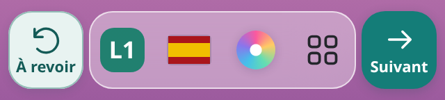
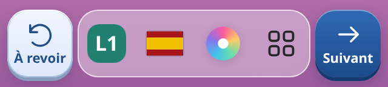
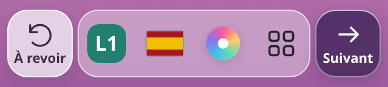
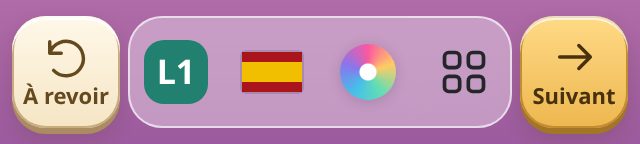

Quatre finitions, vues de près
Disposition 3 conservée. Les couleurs et le relief des deux boutons varient.
1 · Turquoise doux
Conseillée

Un turquoise doux et un relief discret.
2 · Bleu en relief


Des touches bleues au relief plus marqué.
3 · Verre et prune


Du verre clair et du prune pour une finition légère.
4 · Ivoire et ambre


Des teintes chaudes et un relief légèrement biseauté.